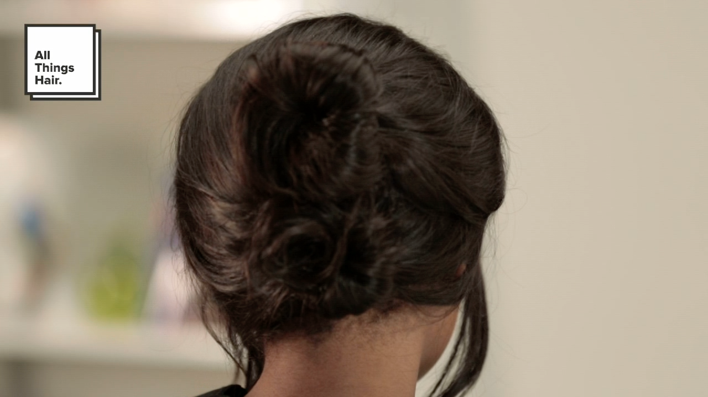

Rihanna Inspired Matric Updo
When it comes to hairstyles, Rihanna is a goddess in her own right, and when we saw her rocking this look it was love at first sight. It looks so sophisticated, but it’s so simple and easy to do. Perfect for a matric dance or other special occasions like it, this is an awesome go-to.
So you’ve got your outfit ready and your make up look is planned. But your hairstylist didn’t show up. OMG what to do? Don’t worry, we’ve got you covered.
Step 1: Wash your hair
We recommend you use the Dove Nourishing Oil Care Shampoo and Conditioner to keep your hair smooth and frizz free. For a bit of volume, and to create a light hold, you can use the TRESemmé Beauty-full Volume Mousse. To use this this, just pump out a bit of it and work it gently through your hair.
Step 2: Start styling
Now that your hair is clean and dry, divide it into 2 sections, running your comb (or finger) from ear to ear. Twist the top half into a tight bun at the back of your head, and secure with bobby pins.
Repeat this step with the bottom half of hair, and ensure that both buns are pinned close together.
Step 3: Pull out some strands of hair in the front, to frame your face. You can leave it hanging straight, or you can curl them a bit with a curling iron for a more romantic look.
 Dove Nourishing Oil
Dove Nourishing Oil
Care Shampoo
 Dove Nourishing Oil
Dove Nourishing Oil
Care Conditioner
 Salon Finish
Salon Finish
Extra Hold Hairspray